DefVarsE3() id e1 
e2 
e3 
I 
In this section I assume that you are familiar with the basics of Clifford (or geometric) algebra. CLUScript currently supports three Clifford algebras: the Euclidean 3-space and the corresponding projective and conformal spaces. You can work with multivectors from all three spaces concurrently in the same script. However, you cannot operate with multivectors of one space onto multivectors of a another space. Instead, you have to cast multivectors explicitly.
The VecXX functions expect either a single counter, a list of two or three scalars or a single multivector. If you pass a single counter the vector can be controlled by the user with the mouse. See the section User Interaction for more details. If you pass three scalars, a vector with the corresponding components in 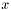 , 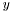 and -direction is created. If you only pass two scalars, the -component is set to zero. However, note that since VecC2() creates a vector in the space of 2D-conics, it accepts at most two parameters. Passing a multivector converts the vector part of this multivector to the appropriate space.
A = VecE3(1,1,1) assigns to A the multivector 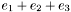 . A subsequent code-line like PA = VecP3(A) embeds A in projective space. That is, PA is assigned the multivector 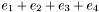 .You can also create rotors with the functions RotorE3(), RotorP3(), RotorN3() and RotorC2(). For conformal space there also exist functions to create a sphere (SphereN3()), a translator (TranslatorN3()) and a dilator (DilatorN3()). For the conic space there is also a function that creates a reflection operator (ReflectorC2()). See the reference manual for more details.
There are four functions to define variables for the basis elements of the different spaces: DefVarsE3(), DefVarsP3(), DefVarsN3() and DefVarsC2(). These functions take no parameters. The following tables show the variables defined by the three functions and their algebraic meaning. All these variables are of the type multivector.
| Function | Variable | Content |
DefVarsE3() | id | 1 |
e1 | | |
e2 | | |
e3 | | |
I | |
The three basis vectors of Euclidean space  all square to
all square to  . The variable
. The variable id is defined in order to create grade zero multivectors in Euclidean space.
| Function | Variable | Content |
DefVarsP3() | id | 1 |
e1 | | |
e2 | | |
e3 | | |
e4 |  | |
I |  |
The four basis vectors of projective space  all square to . Note that this differs from some researchers which prefer to use a space-time basis for projective space, i.e. square to
all square to . Note that this differs from some researchers which prefer to use a space-time basis for projective space, i.e. square to  and squares to . The variable
and squares to . The variable id is defined in order to create grade zero multivectors in projective space.
| Function | Variable | Content |
DefVarsN3() | id | 1 |
e1 | | |
e2 | | |
e3 | | |
ep |  | |
em |  | |
e | 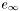 | |
einf | ||
e0 |  | |
n |  | |
nb |  | |
I |  |
In conformal space the four basis vectors  square to and squares to . The composite elements 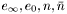 are defined as
square to and squares to . The composite elements 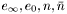 are defined as
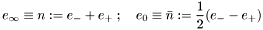
The pairs 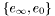 and  are complementary null vectors. That is, 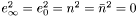 and 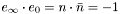 . The two naming conventions for these null vector pairs are used by different researchers. Here both are defined so that nobody gets confused.
are complementary null vectors. That is, 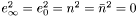 and 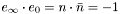 . The two naming conventions for these null vector pairs are used by different researchers. Here both are defined so that nobody gets confused.
| Function | Variable | Content |
DefVarsC2() | id | 1 |
e1 | | |
e2 | | |
e3 | | |
e4 | | |
e5 |  | |
e6 |  | |
I |  |
The six basis vectors of conic space  all square to . Vectors in this space basically encode symmetric 3 by 3 matrices. Details on the embedding can be found in the technical report "Analysis of Local Image Structure using Intersections of Conics" (download). Given a symmetric 3 by 3 matrix it can be embedded in conic space by passing it through the function VecC2(). The opposite is also possible, by passing a vector in conic space to the function Matrix(). Here is an example of that.
all square to . Vectors in this space basically encode symmetric 3 by 3 matrices. Details on the embedding can be found in the technical report "Analysis of Local Image Structure using Intersections of Conics" (download). Given a symmetric 3 by 3 matrix it can be embedded in conic space by passing it through the function VecC2(). The opposite is also possible, by passing a vector in conic space to the function Matrix(). Here is an example of that.
_2dView = 1; ?M = Matrix( [[1, 0, 0], [0, -1, 0], [0, 0, -1]] ); ?C = VecC2(M); :IPNS; :Red; :C; :OPNS; ?X = VecC2(1,0); :Blue; :X; ?N = Matrix(X);
This script produces the output
M = (| 1 0 0|, | 0 -1 0|, | 0 0 -1|)
C = -0.707^e3 + 0.707^e4 + -0.707^e5
X = 1^e1 + 0.707^e3 + 0.707^e4
N = (| 1 0 1|, | 0 0 0|, | 1 0 1|)
*, the inner product is the . and the outer product is the ^ operator. The prevalence of the operators also has been defined according to the usual standard. That is, 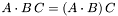 , 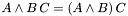 and 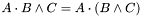 .
Division of multivectors is also defined through the operator <tt>/, whereby  .
.
~, the inverse !, the main involution ', the dual *, the meet &, the join | and the grade projection °. The inverse operator returns a zero multivector if the given multivector has no inverse.
# but °. From version 2.0 onwards, the selection operator <tt>() can be used to extract single component elements from a multivector.A is a multivector variable then A°2 is equivalent to  . You can also select elements of a multivector with the selection operator <tt>(). For example,
. You can also select elements of a multivector with the selection operator <tt>(). For example,
DefVarsE3(); ?A = 1 + 2*e1 + 3*I; ?A(1); ?A(2); ?A(8); ?A°1;
produces the output
A = 1 + 2^e1 + 3^I Constant = 1 Constant = 2 Constant = 3 Constant = 2^e1
The main involution operator <tt>' only has an effect in conformal space, since there exists a basis vector with a negative signature. Here is an example that shows the effect.
DefVarsN3(); ?em; ?'em; ?e1; ?'e1;
This script has the output
em = 0.5^e + 1^e0 Constant = -0.5^e + -1^e0 e1 = 1^e1 Constant = 1^e1
The join and meet operations only make sense when applied to blades. They will still give a result if their operands are no blades but that result is not useful. I gave the join and meet the symbols for bitwise OR (|) and bitwise AND (&), as defined in C/C++, since this is what they do for blades. Note that the meet of a non-zero scalar with a blade returns 1. The join of a non-zero scalar with a blade returns the normalized blade. In fact, the join always returns a normalized blade.
From version 1.5 onwards, the meet and join operation now also work for null blades, which can turn up in conformal space. Note that the standard definition of join and meet do not include the case of null blades. I therefore extended the definition for this case, such that they are still useful operations. For example, in conformal space the intersection point of a line and a plane will be of the form 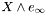 , where  is the intersection point embedded in conformal space and is the point at infinity. Suppose we have a second point of this form 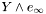 . If we are now interested in the line passing through them we cannot simply calculate 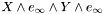 since this is zero. However, if the join operation could give us 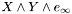 , we would optain just the line we are looking for. And this is also how the extended join operation works. The extended meet work analogously, such that, for example, 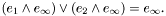 Note that the function FactorizeBlade() also factorizes null blades properly from version 1.5 onwards. Here is an example script to demonstrate these properties.
is the intersection point embedded in conformal space and is the point at infinity. Suppose we have a second point of this form 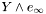 . If we are now interested in the line passing through them we cannot simply calculate 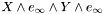 since this is zero. However, if the join operation could give us 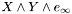 , we would optain just the line we are looking for. And this is also how the extended join operation works. The extended meet work analogously, such that, for example, 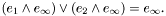 Note that the function FactorizeBlade() also factorizes null blades properly from version 1.5 onwards. Here is an example script to demonstrate these properties.
DefVarsN3(); // Define two null blades ?A = VecN3(1,0,2) ^ e; ?B = VecN3(0,1,1) ^ e; // Their join ?J = A | B; // Their meet ?M = A & B;
A = 1^(e1^e) + 1^(e2^e) + -1^E B = 1^(e2^e) + 1^(e3^e) + -1^E J = 0.707^(e23^e) + -0.707^(e31^e) + 0.707^(e12^e) + -0.707^(e1^E) + 0.707^(e3^E) M = 1.414^e
& and | are applied to two counters, then a bitwise AND and OR operation is performed between the counters, respectively.? 1 & 2; ? 3 & 2; ? 1 | 2; ? 3 | 2;
Constant = 0 Constant = 2 Constant = 3 Constant = 3
You can take a multivector to the power of an integer value with the function pow. For example, pow(e1^e2, 3) returns the third power of 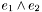 which is . However, pow(e1^e2, 3.5) returns a runtime error message.
A function to evaluate the factorial of an integer value also exists (fact). It evaluates the factorial of integers between 0 and 170. Together with the pow function this enables you to evaluate Taylor expansions of multivector functions.
By the way, to evaluate the Taylor series of the exponential function of a multivector up to degree twelve, you can use the function exp.
 of grade
of grade  represents the subspace of vectors which either satisfy
represents the subspace of vectors which either satisfy  or
or  . Since
. Since  the inner product null space (IPNS) is dual to the outer product null space (OPNS).
the inner product null space (IPNS) is dual to the outer product null space (OPNS).
Per default blades are represented through their OPNS in all spaces. You can also switch explicitly to the representation of blades through their IPNS using the function SetMode. From version 1.4 onwards you can switch between the OPNS and IPNS representation using the variables OPNS and IPNS respectively. For example, if you write SetMode(IPNS), multivectors in all spaces are visualized by interpreting their inner product null space. Clearly, depending on the space they are in, blades represent different geometric entities.
In general, planes and circles are sided geometric entities in Clifford algebra. That is, they have a front and a back. When you visualize a plane in a particular color, the front side of the plane appears in just that color, the back however, is drawn in a darker version of that color. Also the front side is more reflective than the back. This visualizes the sidedness of planes. For circles, the front side of a circle reflects light stronger than the back.
Lines and planes are drawn centered on the point on the line or plane that is closest to the origin. This may not always be the most useful representation. At times you might want to change the offset vector of a line or plane. In order to do so you can use the function Offset. This function takes either two or three parameters. The first parameter is always the blade that you want to draw with a different offset vector and the second parameter is the new offset vector. The offset vector can be a vector defined in any space, as long as it represents a point in Euclidean space. The third, optional, parameter is the new scale of the line or plane. In the following example it is shown how to draw a line between two points in projective space. You can find this example under LineP3.clu. Also take a look at StereoCamera.clu for a more advanced example.
// Define P3 Variables DefVarsP3(); // Normalized homogeneous vectors :A = 2*e1 + e4:Red; :B = 3*e2 + e4:Blue; L = A^B; // Direction of line :V = L . e4:Green; // Draw line starting at A with length sqrt(V.V) :Yellow; Offset(L, A, sqrt(V.V));
Rotors can also be visualized. They are always represented in the same way: a section of disc representing the rotation angle and a rotation axis. Rotations are always performed anti-clockwise with respect to the rotation axis. Note that the top-side of the disc section is visualized in a brighter color than the back-side. This gives you an additional visual cue to the orientation of the rotation plane. Furthermore, the disc is transparent, so as not to clutter the visualization too much.
: operator. Simply write :VecE3(1,2,3):Red to draw the vector  using the color red. (Recall that the colon operator is executed from right to left.) In the following I will list the special visualization features in the three spaces Euclidean, projective and conformal.
using the color red. (Recall that the colon operator is executed from right to left.) In the following I will list the special visualization features in the three spaces Euclidean, projective and conformal.
:Red, for example, then this color stays active until you switch to a different color. This is also true for the visualization modes that can be set with the function SetMode. They stay active until changed. Nevertheless, if a script is executed multiple times, standard variables like the current color or the drawing modes are reset to standard values before each execution. In this way you can always be sure of these states at the beginning of a script, even if states are changed within the script.Red, Green, Blue, Magenta, Cyan, Yellow, Orange, Black, White. Each of these colors also has a medium bright and a dark version. These are named like the basic color prefixed by a M or D, respectively.
Another global visualization switch is DRAW_POINT_AS_SPHERE, which is independent of any space. After applying this switch using SetMode() or the operator : all points are drawn as small spheres. You can switch back to the default mode with DRAW_POINT_AS_DOT.
SetMode: E3_DRAW_VEC_AS_LINE This switches the visualization of vectors to the standard as described above.
E3_DRAW_VEC_AS_ARROW This switches the visualization to arrows.
E3_DRAW_VEC_AS_POINT This switches the visualization to points. // Define the variables for E3 DefVarsE3(); // Set the mode. // You could also simply write // :E3_DRAW_VEC_AS_ARROW; // SetMode(E3_DRAW_VEC_AS_ARROW); // Draw the vector :e1;
E3_DRAW_PLANE_AS_RECT This switches the visualization of planes to rectangles.
E3_DRAW_PLANE_AS_DISK This switches the visualization of planes to discs.
component it is also called a direction vector and is represented as an arrow pointing in the appropriate direction from the origin.
SetMode with the parameters N3_IPNS and N3_OPNS, respectively. For example, SetMode(N3_IPNS) switches to IPNS mode. Furthermore, spheres can either be drawn as wire-frames (default) or as solid spheres. To switch between these modes use N3_WIRE and N3_SOLID, respectively. Note that you can set any number of modes in a single call to SetMode. For example, SetMode(N3_IPNS, N3_SOLID) sets both modes. From CLUScript version 1.3 onwards also imaginary objects are visualized. That is, points pairs, circles and spheres with imaginary radius are drawn in a special form, as detailed below. By default imaginary objects are drawn. You can switch this off with the variable N3_HIDE_IMAG. In order to show imaginary objects again use the switch N3_SHOW_IMAG.Unless stated otherwise, the following discussion of blades refers to their OPNS.
VecN3 creates vectors of this type. The IPNS of a vector can also represent a sphere. In that case the vector has the form 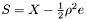 , where  is the radius of the sphere. In this respect the IPNS of a vector of the form 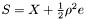 refers to a sphere with radius 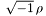 , i.e. a sphere with an imaginary radius. Such spheres are visualized as transparent objects when the visualization mode
is the radius of the sphere. In this respect the IPNS of a vector of the form 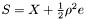 refers to a sphere with radius 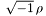 , i.e. a sphere with an imaginary radius. Such spheres are visualized as transparent objects when the visualization mode N3_SHOW_IMAG is set (default).
A vector of the form 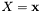 projects to infinity in Euclidean space since it has no component. Nevertheless, the IPNS of such a vector is a plane that goes through the origin. Its OPNS on the other hand is where is some scalar. That is, it does not actually have an OPNS we could visualize. Despite this, such a vector may be interpreted as a point at infinity or direction vector as in projective space. It is therefore visualized as an arrow.
represents the point at infinity. Such bivectors are also called the {affine representation} of points. Therefore, they are visualized just as the single point .
,  and 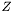 . Such a trivector may also represent a circle with imaginary radius, in which case it is visualized as a dotted circle. A trivector of the type 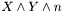 accordingly represents a circle through the points , and , the point at infinity. Such a circle of infinite radius is equivalent to a line through and and will be visualized as such.
and 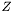 . Such a trivector may also represent a circle with imaginary radius, in which case it is visualized as a dotted circle. A trivector of the type 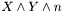 accordingly represents a circle through the points , and , the point at infinity. Such a circle of infinite radius is equivalent to a line through and and will be visualized as such.
 represents a sphere through points , , , , i.e. a sphere of infinite radius which is visualized as the plane through , and . A quadvector of the type 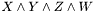 represents a sphere if and only if the four vectors are not co-planar. Such a quadvector may also represent a sphere with imaginary radius, in which case it is visualized as a transparent sphere. Furthermore, in conformal space the outer product of four null vectors that represent four co-planar points in Euclidean space is not null! Instead it represents the plane through the four points. Take a look at the script
represents a sphere through points , , , , i.e. a sphere of infinite radius which is visualized as the plane through , and . A quadvector of the type 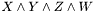 represents a sphere if and only if the four vectors are not co-planar. Such a quadvector may also represent a sphere with imaginary radius, in which case it is visualized as a transparent sphere. Furthermore, in conformal space the outer product of four null vectors that represent four co-planar points in Euclidean space is not null! Instead it represents the plane through the four points. Take a look at the script Sphere.clu to play around with these effects.
Note that Euclidean space and projective space can be regarded as being embedded in conformal space. In general one can say that if you take an algebraic object in conformal space that represents a geometric entity and wedge it with (the point at infinity) you get an object in projective space in which the conformal space object is embedded. For example, take a point pair in . gives the line that goes through both points. Also, if represents a circle in conformal space, then 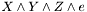 represents the plane in which the circle lies. If such algebraic entities are then also wedged with (the origin), then we go to Euclidean space. For example, given the point , then 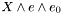 represents the line through the origin in the direction of . This is exactly what we would obtain when visualizing in Euclidean space. Similarly, 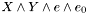 is a plane through the origin and 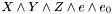 is the whole space.
Also note that, for example, the OPNS of 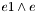 is visualized as an arrow, which is to represent a point at infinity. The OPNS of 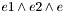 is a line at infinity. This is visualized as a doted circle with two arrows. The OPNS of 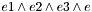 is a plane at infinity which is visualized as a rhombus with arrows. The same can be obtained by visualizing the IPNS of , and  , respectively. Furthermore, the intersection of a plane with a circle lying in a parallel plane gives an imaginary point pair at infinity. Here is an example script, which creates such an object.
, respectively. Furthermore, the intersection of a plane with a circle lying in a parallel plane gives an imaginary point pair at infinity. Here is an example script, which creates such an object.
DefVarsN3(); // The Plane :Red; :P = VecN3(0,0,0)^VecN3(1,0,0)^VecN3(0,0,1)^e; // The Circle :Blue; :C = VecN3(0,1,0)^VecN3(1,1,0)^VecN3(0,1,1); // Their intersection :Green; :X = P & C;
The visulization looks like this.
_2dView = 1; :DRAW_POINT_AS_SPHERE; A = VecC2(1,0); B = VecC2(-1,0); C = VecC2(0,1); D = VecC2(0,-1); :Red; :E = VecC2(1); // user interaction :White; :conic = A^B^C^D^E; // Conic through A,B,C,D,E :Orange; :conic2 = A^B^C^D^VecC2(1,1); // Intersection of both conics :Green; :conic & conic2; // The standard meet operation
produces the following visualization after moving the point E with the mouse a bit.
:Plot( x*e1 + x*x*e2, [x, -2, 2, 40]). The first parameter of Plot() gives the function that is to be plotted. This function needs to return something that represents a point Euclidean 3D-space. For example, you can draw the function also as follows.
Although the vector returned by the function lies in projective space, it is projected into Euclidean space before being plotted. Note that the function would not be evaluated correctly at the position . By choosing 61 steps to draw the function we simply jump over this (undefined) point.
The return value of Plot() is of type vertexlist. A vertex list simply contains a number of vertices, i.e. 3D-points, that are connected in some way when drawn. A vertex list can be drawn with the colon operator. Therefore, we can also write:
DefVarsE3(); SINC_P2 = Plot(0.1*x*x*e1 + sin(x)*e2 + x*e3, [x, -4*Pi, 4*Pi, 61]); SINC_E2 = Plot(0.1*x*e1 + sin(x)/x*e2, [x, -4*Pi, 4*Pi, 61]); // Print the vertices ?SINC_P2; ?SINC_E2; // Now plot both functions :SINC_P2:Red; :SINC_E2:Blue;
The two plots are first saved in VertexList variables, then their values are printed and in the end they are drawn. The visualization looks like this:
The Plot() function simply executes the commands passed as first parameter for every value of the free parameter. This does not mean that you have to use the free parameter in the function. Therefore, we can for example draw coupled twists in the following way.
DefVarsE3(); A = e1; B = e1; R = RotorE3(0, 0, 1, 10*RadPerDeg); R2 = RotorE3(0, 0, 1, -5*RadPerDeg); :Green; :Plot((A = R*A*~R) + (B = R2*B*~R2), [x, 0, 1, 72]);
This produces the visualization:
Here the function (A = R*A* ~R) + (B = R2*B* ~R2) is simply executed 73 times. Note that since the given range is split into 72 parts, the function is evaluated at 73 points. Since A and B are at every step replaced with a rotated version of themselves, the resultant plot is that of a coupled twist. Take a look at the script Plot1.clu for a more advanced example.
Just as you can draw point-valued 1D-functions, it is also possible to draw circle- and line-valued 1D-functions, as well as point-valued 2D-functions, i.e. surfaces. Circle-valued functions are functions that return 3-blades in conformal space which represent circles in Euclidean space. Similarly, line-valued functions are functions that return 2-blades in projective space or 3-blades in conformal space, which represent lines. In both cases, Plot() draws the surface spanned by the circles or lines. Here is a simple example of a circle valued function.
f1 = { x = _P(1); VecN3(x,0.1,0) }
f2 = { x = _P(1); VecN3(0,-0.1,x) }
f3 = { x = _P(1); VecN3(-0.1,x,0) }
:Red;
:Plot(f1(x), [x,-1,1,20]);
:Green;
:Plot(f2(x), [x,-1,1,20]);
:Blue;
:Plot(f3(x), [x,-1,1,20]);
:White;
:Plot(f1(x)^f2(x)^f3(x), [x, -1, 1, 20]);
This produces the following visualization
Such circle surfaces are actually easier to view, if the color changes along the surface. This can be achieved by adding a color function. The last line of the previous example then looks like this.
:Plot([ f1(x)^f2(x)^f3(x), // The function Color(x*x, 0.8*Ran(), 1-x*x)], // The colors [x, -1, 1, 20]);
This results in the following.
If you want to plot a 2D-function, you can also use the Plot() function. Here is an example.
The surface looks like this.
You can now also add a color function and also a normal function. Both are optional and their order is also arbitrary. However, the first function has to be the function to be plotted. If no normal function is given, the normals are evaluated numerically. Here is an example with a color and normal function.
:Plot( [ VecE3(y, 0.3*cos(2*Pi*x*y), x), // The function Color(x*x, x*x*y*y, y*y), // The color *( VecE3(0,-0.6*Pi*y*sin(2*Pi*x*y),1) // The normal ^VecE3(1,-0.6*Pi*x*sin(2*Pi*x*y),0)) ], [x, -1, 1, 20], [y, -1, 1, 20]);
This generates the following visualization.
It can also be interesting to draw the normals on top of the surface. This is achieved by adding a fourth parameter to Plot(), which gives the size of the normals. Note that you need not give a normal function in order to draw the normals. When normals are drawn, Plot() returns a list of two vertex lists. The first element of this list is the vertex list for the surface and the second one is the vertex list for the normals. Have a look at the example script 'PlotTest4.clu' for an example of how this can be used advantageously. Here is the example from above, now with normals drawn.
:Plot( [ VecE3(y, 0.3*cos(2*Pi*x*y), x), // The function Color(x*x, x*x*y*y, y*y), // The color *( VecE3(0,-0.6*Pi*y*sin(2*Pi*x*y),1) // The normal ^VecE3(1,-0.6*Pi*x*sin(2*Pi*x*y),0)) ], [x, -1, 1, 20], [y, -1, 1, 20], 0.1);
This generates the following visualization.
Here is yet another example with a more interesting surface.
:Plot( [ VecE3(0.3*cos(2*Pi*y), 0.3*cos(2*Pi*x), x*y), // The function Color(x*x,y*y,x*x*y*y) // The color ], [x, -1, 1, 20], [y, -1, 1, 20]);
It looks like this.
Also have a look at the functions DrawLineSurface(), DrawCircleSurface(), DrawPointSurface() and DrawPointGrid(). In fact, the function Plot() uses these to do the advanced plotting.